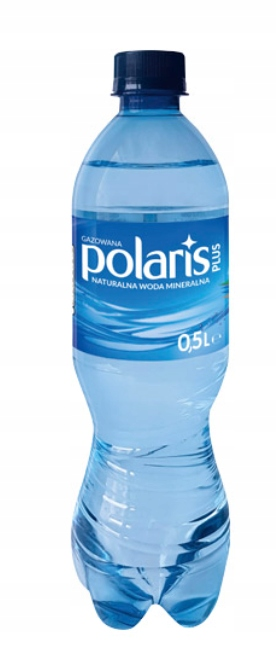

H2O
- Muszyna
- Cisowianka
- Polaris
- Aqua

Ciekawe fakty o wodzie
- W naszej atmosferze zawarte jest więcej wody niż w sumie we wszystkich rzekach na Ziemi
- W niektórych częściach świata dostęp do wody wymaga poświęcenia. Kobiety z krajów rozwijających się codziennie przemierzają średnio 6 km, by zdobyć ten cenny płyn.
- Nawet nasze kości nie są suche! Składają się one w 31% z wody.
- Gdzie jest reszta słodkiej wody? Ukryta! Aż 30% tej wody jest schowane pod powierzchnią ziemi.
- Czy wiedziałeś, że Amerykanie wykorzystują prawie połowę swojej wody do produkcji energii elektrycznej?
- Meduza i ogórek morski składają się w 95% z wody.
- To smutne i alarmujące: skażona woda jest przyczyną śmierci 200 dzieci każdej godziny.
- Nasz mózg, tak skomplikowany i ważny, składa się w 70% z wody.